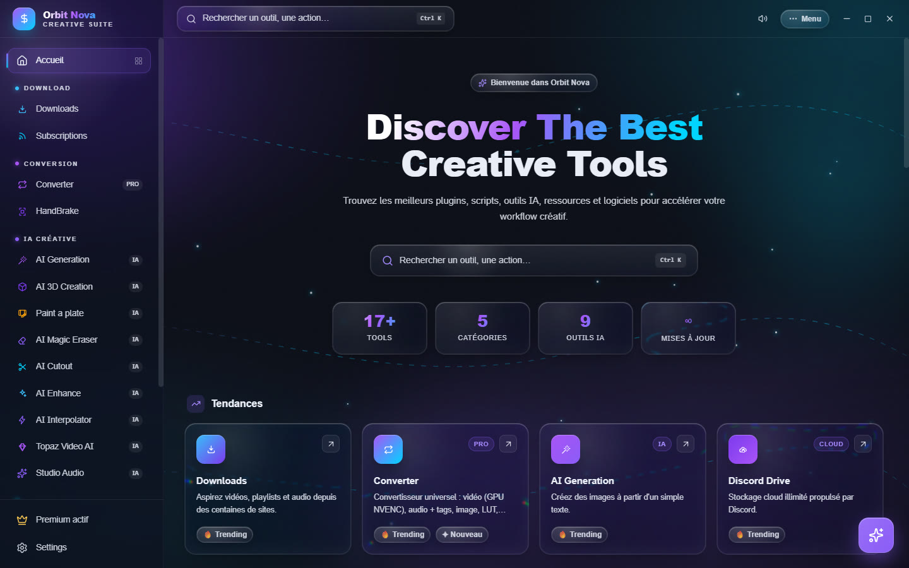
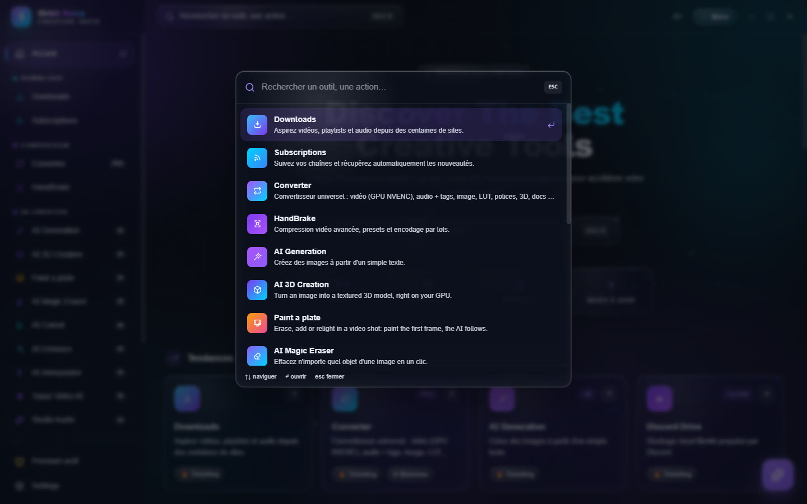
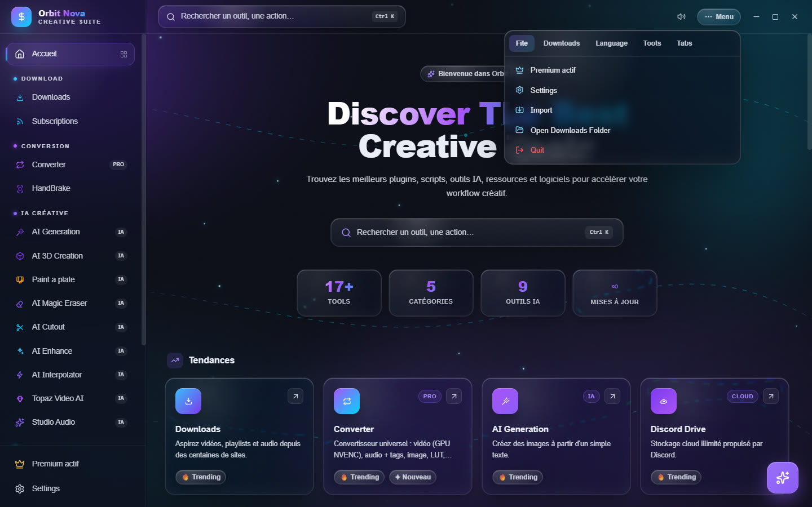
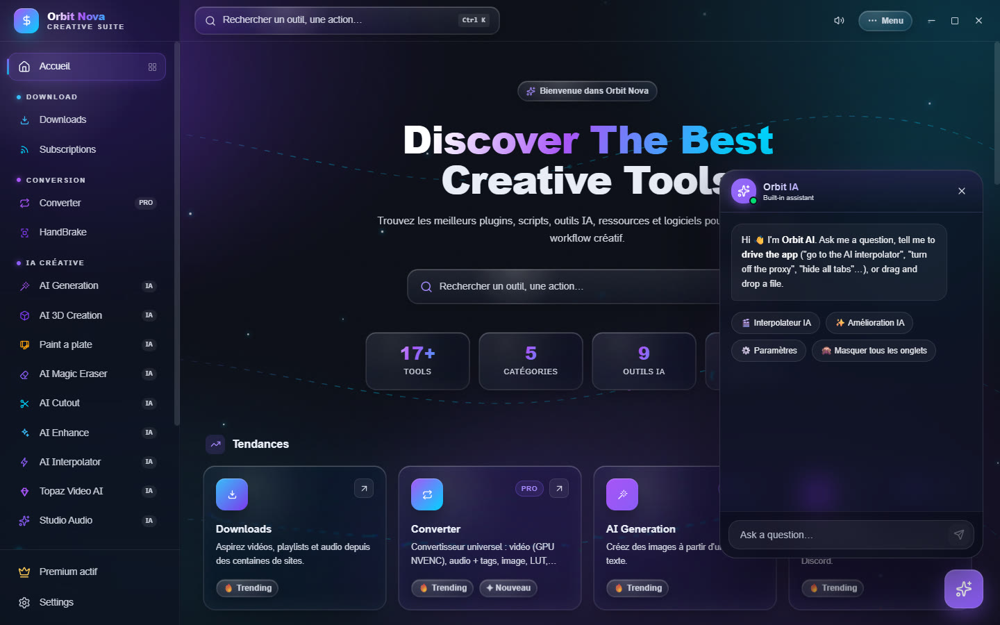

The interface
Home
The home screen shows every tool, sorted into five categories: Download, Conversion, Creative AI, Studio & Tools and Cloud. The Trending and New rows highlight the most used and the latest tools. Click a card to open the tool.


The sidebar on the left stays visible everywhere: it lists the tools by category, with Premium (your licence state) and Settings at the bottom. In a small window it folds away: the menu button at the top left opens it.
Search (Ctrl+K)
Press Ctrl+K anywhere, or click the search box at the top: type a few letters, then Enter to open the tool. Search also finds the tools you have hidden.


The Menu
The Menu button, at the top right, groups the general commands:
- File: Premium, Settings, Import (a list of links), open the download folder, Quit;
- Downloads: pause all, resume all, restart failed downloads, clear finished ones, cancel all;
- Language: English, French, Spanish, German, Italian, Portuguese;
- Tools: open the Orbit folder, reinstall or update yt-dlp, changelog, back up and restore subscriptions, AI Assistant;
- tab visibility: tick or untick the tools to show in the sidebar.


Next to it, the speaker icon mutes or restores the small interface sounds.
The AI assistant
The round button at the bottom right opens Orbit AI, an assistant that knows the app. Ask it what you want to do ("compress this video for Discord", "where do I set the quality?"): it answers, opens the right tool or changes a setting for you. You can also drop a file on it.


The assistant uses a free local AI (about 2 GB, downloaded once, works offline) or, if you add your own key, Anthropic's Claude: Settings › AI & Performance › AI Assistant.
Task center
Long jobs (conversions, AI renders, encodes) show up in the task center with their progress, even when you switch tabs. AI tools that use the graphics card run one at a time: a waiting job shows Waiting for a GPU slot… (set in Settings › Downloads › Simultaneous AI jobs (GPU)).
Drag and drop
Almost every tool accepts files dragged from Windows Explorer, one at a time or many at once. You can also add Orbit to Explorer's right-click menu (Settings › Downloads › Windows right-click menu) to compress or crop a file without opening the app.